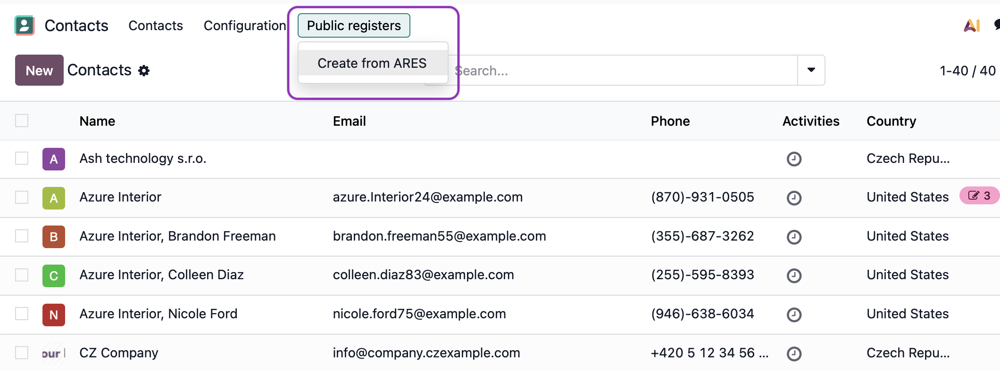
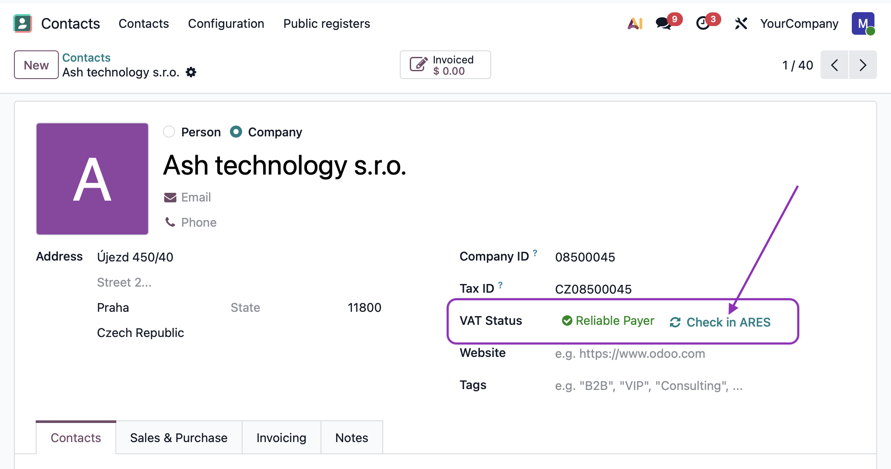
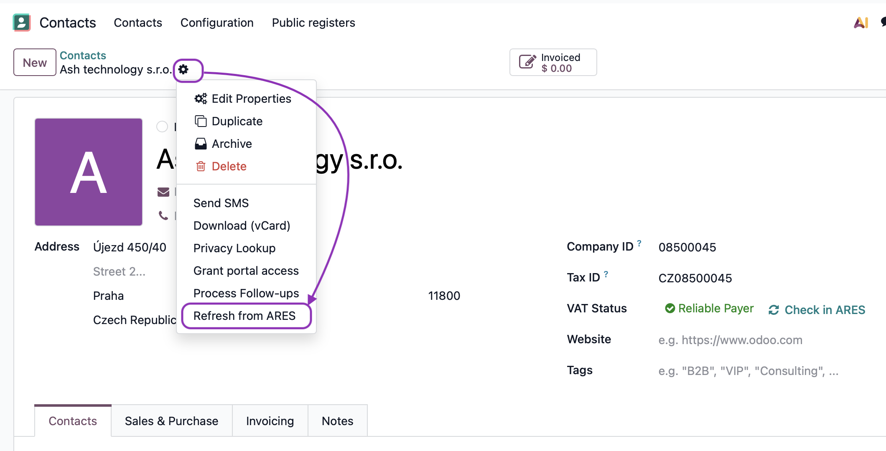
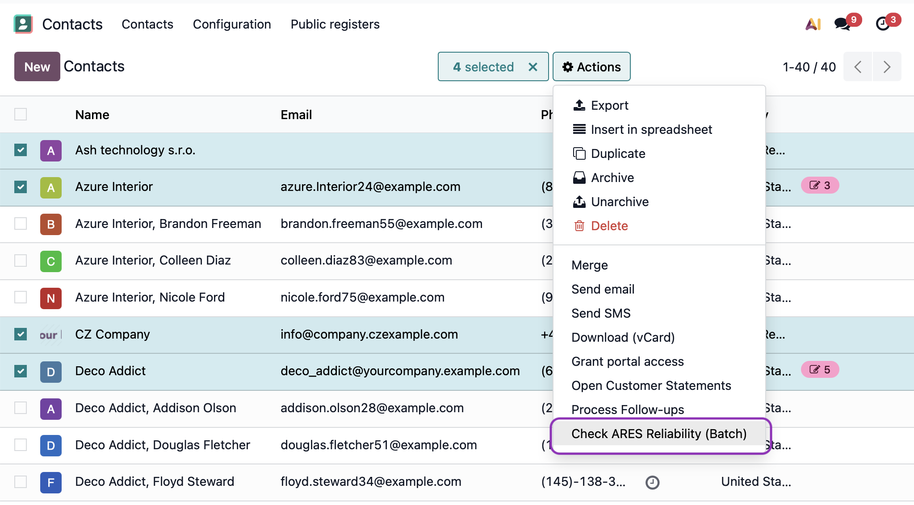

Automate partner creation and ensure VAT compliance for the Czech market. Simply enter a Company ID (IČO) and let the system fill in all the details.
Create new partners instantly by entering their 8-digit Company ID (IČO). The system connects to the official ARES registry and automatically fills in:


Protect your business from unreliable VAT payers. The system tracks each Czech partner's status:
Keep your partner data up-to-date. Use the "Update from ARES" action on any partner card to refresh their information from the official registry.


Need to verify multiple partners at once? Select them in the list view and use Action > Check VAT Payer Reliability to update all selected records simultaneously.
Why don't I see the "Create from ARES" button?
Make sure you have the Invoicing or Contacts app installed and that your user has the appropriate permissions.
How does the system identify unreliable payers?
The module calls the official Czech VAT payer registry API maintained by the Ministry of Finance.
This module is developed and maintained by Ash technology s.r.o., an official Odoo partner based in the Czech Republic.
This module is free and open-source. We welcome your feedback and feature requests – if your idea benefits the community, we're happy to include it.
Contact us:
Web: www.ashtechnology.eu
Email: info@ashtechnology.eu
For custom Odoo development or larger projects, feel free to reach out.
Odoo is a trademark of Odoo S.A.